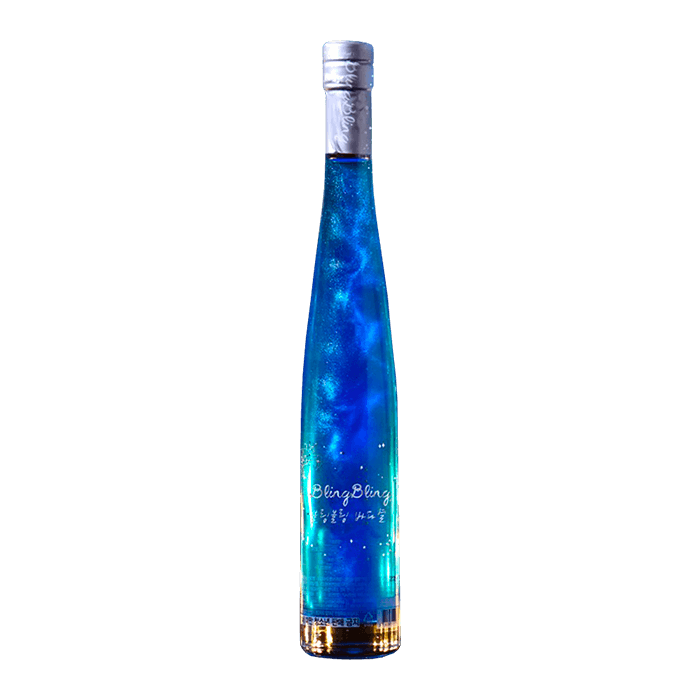
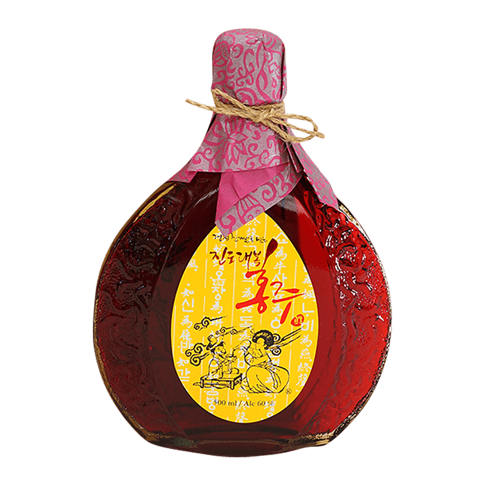
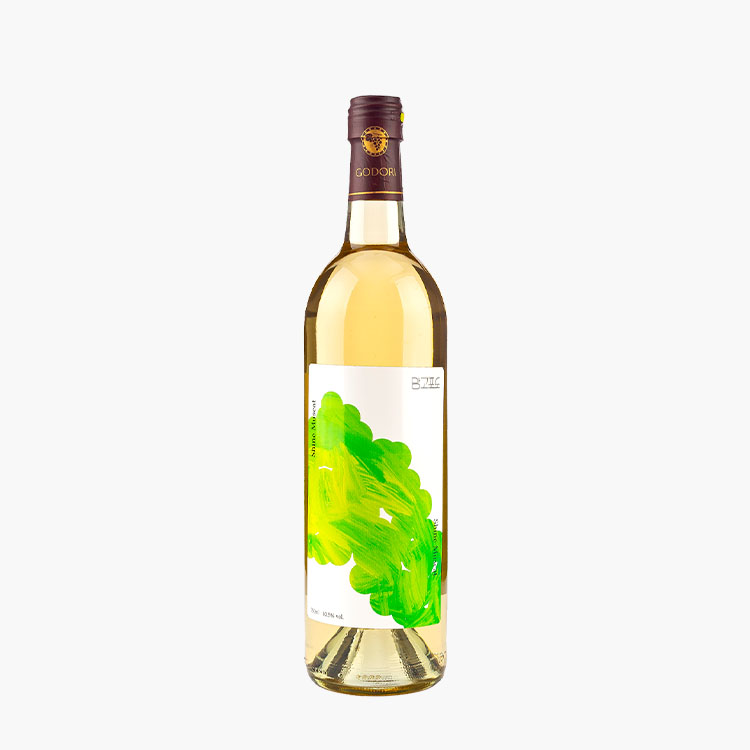
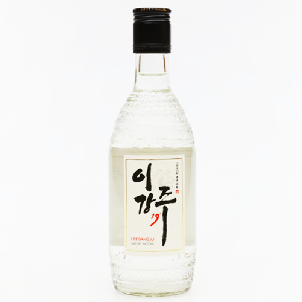
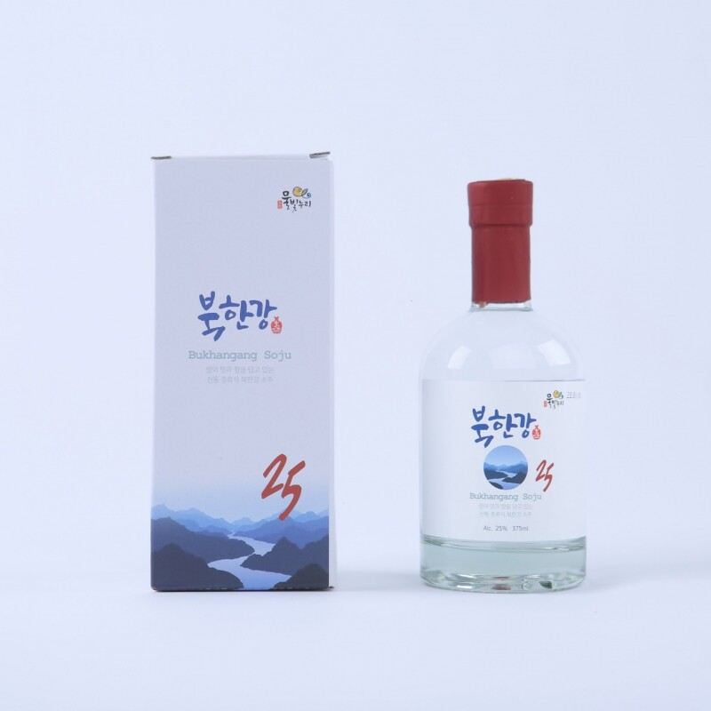

고향춘
- 제조사 : 술빚는 전가네
- 주원료 : 포천쌀9.6%,찹쌀19.2%향미참쌀9.6%,전가네 이화곡3.8%,정제수57.8%.
- 규격/도수 : 350ml / 10%
- 제품특징 : 쌀가루 누룩(이화곡)으로 빚은 과일향과 단맛이 조화를 이룬 탁주이다.
궁예의 눈물
- 제조사 : 술빚는 전가네
- 주원료 : 포천쌀31.1%,누룩3.1%,억새어린순0.3%,정제수65.6%.
- 규격/도수 : 720ml / 10%
- 제품특징 : 왕건이 궁예에게 잡혀 크게 울었다고 해서 이름붙여진 산정호수의 명성산 그 산의 억새를 재료로 만든 가양주
쌀은원래달다
- 제조사 : 인천탁주
- 주원료 : 쌀(국내산) 36.28%함유, 국, 효모, 혼합제제(효모가루, 유당)
- 규격/도수 : 500ml / 9%
- 제품특징 : 자연의 맛 그대로, 소중한 분과 함께하는 고품격 프리미엄 막걸리 쌀은 원래 달다는 합성감미료를 전혀 사용하지 않고 오직 국내산 쌀로만 단맛을 구현한 프리미엄 막걸리입니다. 쌀은원래 달다는 이화주 전통방식을 현대적으로 재해석하여 맛과 풍미가 가득한 생막걸리입니다.
소성주
- 제조사 : 인천탁주
- 주원료 : 정제수, 쌀(국내산), 국(밀함유), 팽화미(국내산), 올리고당, 효모, 아스파담(감미료, 페닐알라딘 함유), 구연산
- 규격/도수 : 750ml / 6%
- 제품특징 : 소성주플러스 막걸리는 국내산 쌀과 한국 식품 연구원 우리술 연구팀과 공동개발한 국내산 전통 누룩의 우수효모로 만든 인천탁주에서 개발한 프리미엄
삼해주
- 제조사 : 선인양조
- 주원료 : 양주쌀, 누룩, 정제수
- 규격/도수 : 500ml / 15%
- 제품특징 : 삼해 주는 고려 시대부터 이어져 온 서울지역의 전통주입니다. 원래 궁중에서 의식이나 행사 사용하거나 사대부 집안의 가양주로 애용되다가 조선시대에 큰 사랑을 받았습니다. 15도 도수가 느껴지지 않을 만큼 부드러우며 단맛, 신맛 등이 적당히 잘 어우러지고 뒷맛도 깔끔합니다.
산정호수
- 제조사 : 술빚는 전가네
- 주원료 : 포천쌀45.02%,국산팥4.5%,전가네 누로룩4.5%,정제수45.98%.
- 규격/도수 : 500ml / 15%
- 제품특징 : 팥을 원료로 세 번 빚은 삼양주. 창경궁의 500년된 홍매가 반쯤 피었을 때의 빛깔을 닮았다고 이름 붙인 약주이다.
보령주
- 제조사 : 영농조합법인 보령전통주
- 주원료 : 정제수,백미(국내산)12%,찹쌀(국내산)37%,누록(밀)
- 규격/도수 : 750ml / 15%
- 제품특징 : 저온에서 충분히 발효 숙성되어 부드러운 맛과 깔끔한 청량감을 느낄 수 있는 전통주 고유의 맛과 향을 느낄 수 있습니다.
대담 1호 약주
- 제조사 : 대밭고을
- 주원료 : 국산 쌀, 국산 전통 누룩, 물, 대잎
- 규격/도수 : 500ml / 15%
- 제품특징 : 막걸리 단맛을 내는 인공감미료(아스파탐) 사용하지 않습니다. 오로지 쌀의 단맛으로만 맛을 낸 대밭고을의 약주입니다.
화전일취
- 제조사 : 농업회사법인주식회사지시울
- 주원료 : 쌀,누룩,정제수,꽃22종
- 규격/도수 : 500ml / 18%
- 제품특징 : 화전일취18 백화 제조는 일 년 내내, 꽃이 피는 사계절 동안 양조장에서 피어나는 꽃들을 따 모아 말리는 것부터 시작합니다. 다양한 꽃을 넣어 한 모금 한 모금이 꽃을 머금은 듯한 풍미를 줍니다.
추시 감 와인
- 제조사 : 양촌감 와이너리
- 주원료 : 감.홍국.효모.포도당.주석산.펙티나제.헤미셀룰라제.효소처리스테비아.메타중아황산칼륨(산화방지제)
- 규격/도수 : 750ml / 12.5%
- 제품특징 : 추시는 홍국과 타닌으로부터 옅은 붉은 색을 띄며 감 고유의 은은한 향과 입안을 감싸는 독특한 떫은 맛이 특징입니다.
복숭아 와인
- 제조사 : 솔티마을
- 주원료 : 복숭아원액89.92%[국내산100%],설탕,효소
- 규격/도수 : 500ml / 12%
- 제품특징 : 투명하고 은은한 복숭아 향이 살아있는 산뜻한 바디감의 화이트 와인입니다.
애플린
- 제조사 : 반딧불사과와인
- 주원료 : 효모,설탕,구연산[산도조절제],소르빈산칼륨[보존료],수크랄로스[감미료],메타중아황산칼륨[산화방지제] 아황산함유
- 규격/도수 : 750ml / 12%
- 제품특징 : 애플린 와인은 향긋한 아로마 향과 목 넘김이 부드러운 깔끔한 스위트 와인으로 인기가 많은 와인입니다.
딸기와인
- 제조사 : 해미읍성딸기와인
- 주원료 : 선신딸기90% ,아황산염,소르빈산염,백설탕
- 규격/도수 : 750ml / 12%
- 제품특징 : 직접 재배한 딸기만을 가지고 특허받은 딸기와 인 제조법으로 만든 와인입니다.
애플블랑
- 제조사 : 예산사과와인
- 주원료 : 예산사과(국내산) 86%, 설탕, 효모, 구연산, 무수아황산(산화방지제), 소르빈산칼륨(합성보존료)
- 규격/도수 : 750ml / 12%
- 제품특징 : 향긋한 사과향이 코 끝을 자극하며, 입안에서 퍼지는 낭만적인 달콤함과 연이어 찾아오는 부드러운 목 넘김을 경험해 보세요.
양촌 감 보드카
- 제조사 : 양촌감 와이너리
- 주원료 : 감발효증류주,정제수
- 규격/도수 : 375ml / 32%
- 제품특징 : 추시는 홍국과 타닌으로부터 옅은 붉은 색을 띄며 감 고유의 은은한 향과 입안을 감싸는 독특한 떫은 맛이 특징입니다. 감을 사용한 술을 만들기 위해 홍국균을 이용하여 감을 발효시키는 특수공법을 개발하여 추시만의 독특한 맛과 향을 만들게 되었습니다.
두레앙 목통주
- 제조사 : 두레양조
- 주원료 : 포도96.1%,메타증아황산칼륨,효모,설탕,정제수
- 규격/도수 : 500ml / 35%
- 제품특징 : 두레앙 브랜디는 증류 과정에서 두통을 유발하는 초류와 후류를 제거해 깔끔한 맛을 자랑한다. 특히 맛을 좋게 하기 위해 감압식 증류로 생산, 일반 농가에서 만들어 먹는 증류주에 비해 불 냄새가 없고 포도향이 강해 제대로 된 거봉 증류주의 풍미를 만끽할 수 있다. 오크통 숙성을 하여 오크향과 묵직한 바디감이 일품이다.
감귤주
- 제조사 : 시트러스
- 주원료 : 감귤(제주산)증류주원액,정제수
- 규격/도수 : 750ml / 50%
- 제품특징 : 신례명주는 반짝이는 황금빛 제주 감귤을 저온 발효하여 증류한 후 참나무통에 숙성한 술입니다.
도원결의
- 제조사 : 영덕주조
- 주원료 : 정제수,증류원액,복숭아(국내산),복숭아향(천연향류),포도당,효소처리스테비아,구연산
- 규격/도수 : 360ml / 40%
- 제품특징 : 청정지역 영덕의 해풍을 맞고 자란 복숭아를 천연 발효 기법으로 빚어 자연스러운 복숭아 향이 풍부하며 은은한 단맛과 상큼함이 조화롭고 목넘김이 부드럽습니다.

블링블링 바다별
- 제조사 : 영덕주조
- 주원료 : 정제수,사과(국내산100%),증류원액,정백당,효소처리스테비아,사과향(천연향료),구연산(산도조절제)
- 규격/도수 : 375ml / 15%
- 제품특징 : 블링블링 바다별은 사과의 신맛과 달콤함이 어우러져 청량한 맛을 느낄 수 있으며, 아름다운 펄과 함께 마치 오로라를 연상시키는 리큐르입니다.

진도 홍주 진 15호
- 제조사 : 진도대복홍주
- 주원료 : 검정찹쌀(국내산),지초(국내산)
- 규격/도수 : 1800ml / 60%
- 제품특징 : 홍주는 조선시대 진상품으로 꼽힐 만큼 그 붉은 빛깔과 향이 감미로운 술입니다. 애주가들에게 인정받으며 그 명맥을 유지하고 있는 전통 명주입니다.

고도리술
- 제조사 : 제주샘주
- 주원료 : 쌀, 차조, 입국, 누룩, 효모, 효소, 정제수, 스테비올 배당체
- 규격/도수 : 375ml / 40%
- 제품특징 : 제주도 최초의 쌀과 차조로 만든 40도의 곡물 원료의 증류식 소주이다. 견과류와 같은 고소한 향이 살짝 풍기면서 후미까지 여운이 이어진다.

이강주
- 제조사 : 전주 이강주
- 주원료 : 쌀, 소맥분, 정맥, 배, 생강, 계피, 울금, 꿀
- 규격/도수 : 375ml / 19%
- 제품특징 : 이강주에서 느껴지는 배의 묵직함과 생강의 향긋함 그리고 꿀의 달콤함은 각각 다른 도수에서 다르게 느껴져 마실 때마다 새롭게 느껴지는 술이다.

북한강
- 제조사 : 농업회사법인㈜화천주가
- 주원료 : 쌀(화천군), 누룩(국내산), 효모(토종), 정제수 [밀(곡류)함유]
- 규격/도수 : 375ml / 25%
- 제품특징 : 북한강 맑은 물로 화천농부가 재배한 맛있는 갓 도정한 맛있는햅쌀, 누룩, 토종효모로만 만든 전통방식 막걸리를 걸러 약주로 오랜 장기간 저온 숙성 후 만들었으며 마실 때마다 맑음이 느껴지는 술이다.